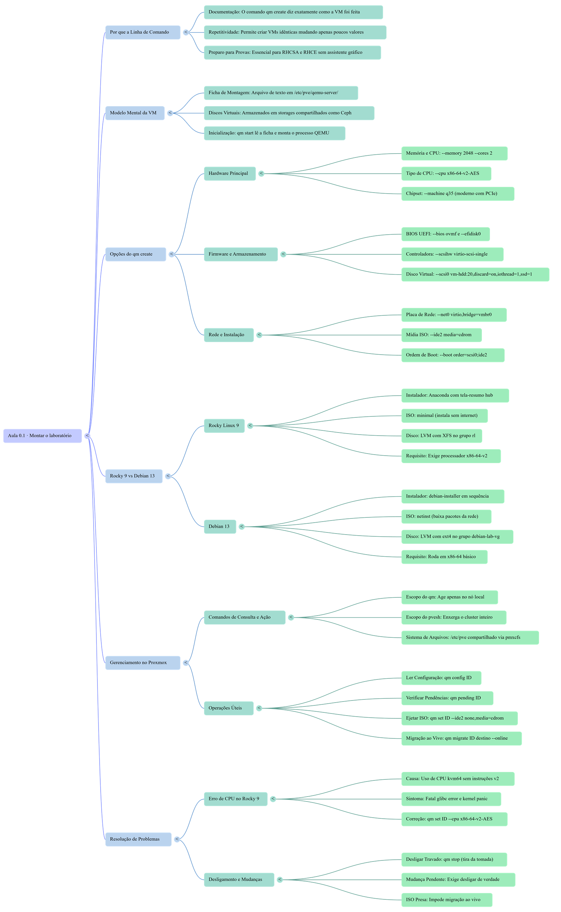
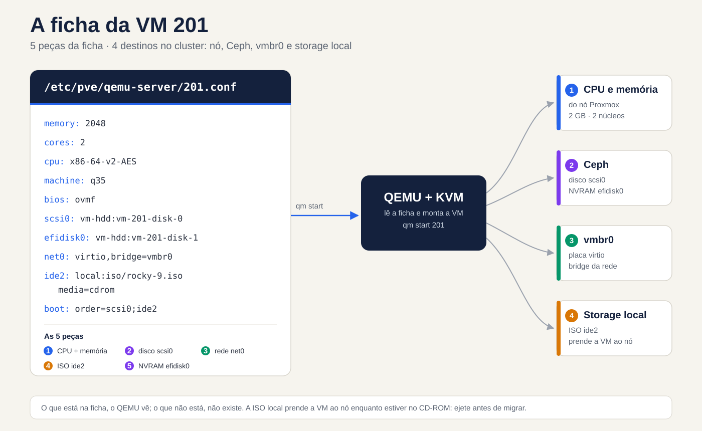
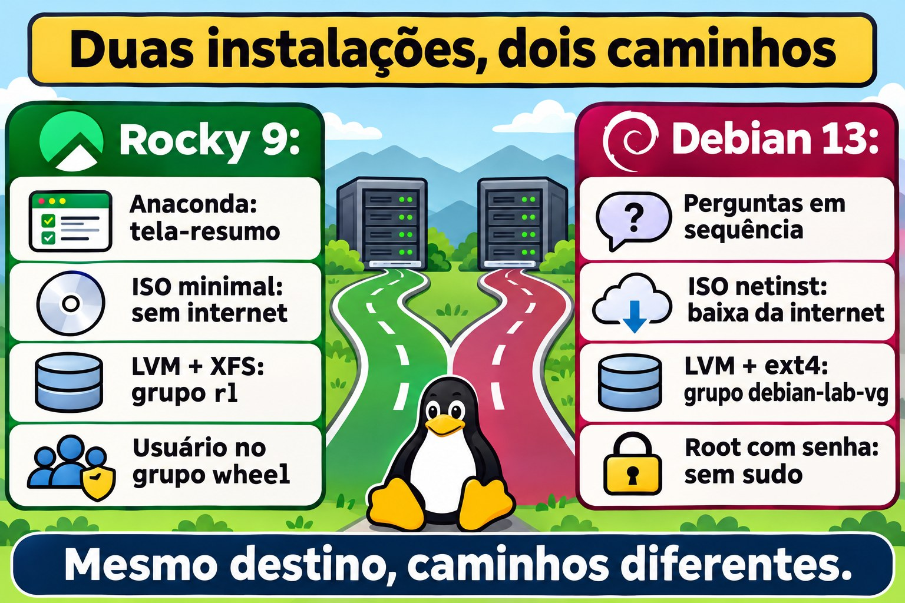
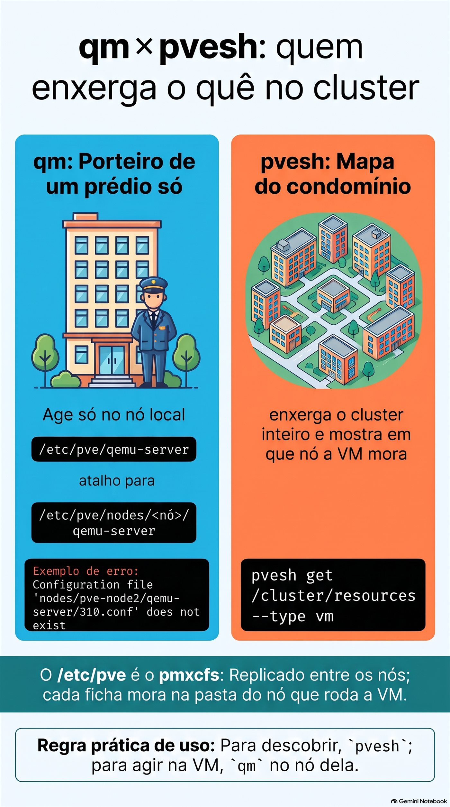
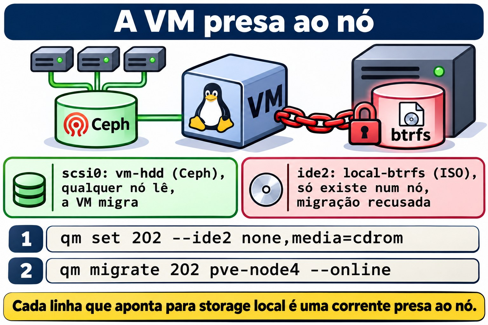
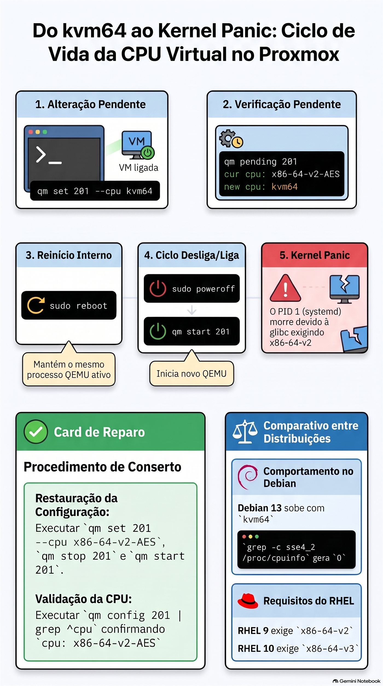

Aula 0.1 · Montar o laboratório
Você cria as duas VMs do curso pela linha de comando do Proxmox, instala Rocky Linux 9 e Debian 13 sabendo o porquê de cada tela e termina com o primeiro snapshot, o ponto de partida de todo o curso.
| Ficha | Aula 0.1 |
|---|---|
| Módulo | M0 · Laboratório, aula 1 de 2 |
| Quando | Semana 1 |
| Ao final você consegue | Criar uma VM com qm create explicando cada opção; instalar Rocky 9 e Debian 13 com disco, rede e usuários escolhidos de propósito; conferir uma instalação em cinco comandos |
| Pré-requisitos | Shell de root num nó do cluster-labvol; as ISOs no local-btrfs de algum nó, ou internet para baixá-las |
| Tempo | Cerca de 2h30: 40 min de leitura, 1h20 de lab, 30 min de quiz e revisão |
| Snapshots | Nenhum no início, porque as VMs ainda não existem; no fim, m0a1-fim nas duas |
Mapa da aula. Antes de começar, veja o caminho inteiro: os seis ramos abaixo são as seis perguntas que esta aula responde. Volte a ele no fim, como revisão.


1 · Aquecimento
Responda de cabeça, antes de ler o resto. Errar aqui faz parte do método: tentar responder antes de estudar obriga o cérebro a procurar, e o que você lê depois gruda mais, mesmo quando o palpite estava errado. As respostas estão no Gabarito, no fim da aba.
- Quando você cria uma VM pelo assistente gráfico do Proxmox, ele toma várias decisões por você. Cite cinco.
- Por que a maioria dos servidores Linux não tem interface gráfica? Pense no Windows Server Core.
- No Windows existe o Administrator; no Linux, o root. Qual é a diferença mais importante entre os dois?
2 · Por que importa
Até o Proxmox VE 7, o assistente gráfico criava VMs com o tipo de CPU kvm64, um processador virtual genérico, sem as instruções que as distribuições novas exigem. O Proxmox 8 passou a sugerir x86-64-v2-AES, mas quem herda um template antigo, ou cria a VM por um script que não declara a CPU, pode acabar com kvm64. O Rocky 9, como o RHEL 9, exige um processador do nível x86-64-v2. A VM simplesmente não sobe, e o console mostra:
Fatal glibc error: CPU does not support x86-64-v2Quem clicou sem saber o que cada campo faz não tem por onde começar. Quem escolheu cada opção sabe onde olhar. Por isso, nesta aula, você cria as VMs pela linha de comando:
- O comando é a documentação. Uma linha de
qm creatediz exatamente como a VM foi feita. Uma sequência de telas não deixa rastro. - O comando se repete. No módulo 13 você cria a VM 203 trocando três valores, e ela sai igual.
- O trabalho é no terminal. Num servidor remoto, numa emergência ou num script, você resolve tudo com comandos e arquivos de configuração; não existe assistente para escolher por você.
3 · Modelo mental
Uma VM é uma ficha de montagem mais os discos.
Pense num PC montado sob encomenda. A loja recebe uma ficha: tal placa-mãe, tanta memória, tal disco, tal placa de rede. No Proxmox, essa ficha é um arquivo de texto de poucas linhas, /etc/pve/qemu-server/201.conf. A cada qm start, o Proxmox lê a ficha, monta o comando do QEMU (o programa que, junto com o KVM do kernel, faz a VM rodar) e inicia o processo. Os discos são outra coisa: volumes guardados num storage, aqui o Ceph, que a ficha só cita pelo nome.
Ponte Windows: no Hyper-V é igual. A VM é um arquivo de configuração .vmcx mais os discos .vhdx. Copiar só o .vhdx não leva a VM junto, e apagar a VM no Hyper-V Manager deixa os discos para trás. Atenção ao contraste: no Proxmox, qm destroy apaga a ficha e os discos juntos.


vmbr0 e a ISO fica no storage local.Leia o desenho da esquerda para a direita. Os discos vão para o Ceph, que todos os nós enxergam. A ISO fica no disco de um nó só e prende a VM a ele enquanto estiver no CD-ROM. A placa de rede entra na bridge vmbr0. O resto vira argumentos do comando do QEMU.
4 · Conceito em camadas
Essencial
Cada opção do qm create que você vai digitar no lab, e o motivo da escolha:
| Opção do qm create | O que é | Por que escolhemos assim |
|---|---|---|
--memory 2048 --cores 2 | RAM em MB e núcleos de CPU | Sobra para um servidor sem interface gráfica |
--cpu x86-64-v2-AES | O processador que a VM enxerga | É o mínimo do Rocky 9 e roda em qualquer nó; o AES acelera a criptografia |
--machine q35 | O chipset virtual | Moderno, com PCIe; o i440fx imita um chipset de 1996 |
--bios ovmf e --efidisk0 | Firmware UEFI e o disquinho onde ele guarda as entradas de boot | É o padrão dos servidores atuais; sem o efidisk, a VM esquece as entradas de boot a cada desligada |
--scsihw virtio-scsi-single e iothread=1 | Controladora de disco paravirtualizada, uma por disco, com uma thread de I/O própria | O melhor desempenho de disco no Proxmox |
--net0 virtio,bridge=vmbr0 | Placa de rede paravirtualizada ligada à bridge | Rápida, e o Linux já traz o driver |
--ide2 ...,media=cdrom | Um CD-ROM com a ISO | Para instalar; depois você ejeta |
--boot 'order=scsi0;ide2' | A ordem de boot | Disco primeiro: vazio, ele falha e o boot cai no CD; depois da instalação, o disco vence |
--ostype l26 | Avisa que o convidado é Linux com kernel 2.6 ou mais novo | O Proxmox ajusta alguns padrões para Linux |
--agent enabled=1 | Abre o canal do QEMU Guest Agent | O pacote, dentro da VM, chega na Aula 0.2 |
--tags curso | Uma etiqueta na interface | Para achar as VMs do curso de relance |
Dois fatos do cluster evitam a maior parte das confusões:
- O
/etc/pveé compartilhado. É o pmxcfs, um sistema de arquivos que o Proxmox replica entre os nós. O caminho/etc/pve/qemu-serveré um atalho para a pasta do nó em que você está; no pve-node3, por exemplo, ele aponta para/etc/pve/nodes/pve-node3/qemu-server. Cada ficha mora na pasta do nó que roda a VM. - O
qmage só no nó local; opveshenxerga o cluster inteiro. Num nó que não hospeda a 201,qm config 201responde que o arquivo não existe. Regra prática: para descobrir,pvesh; para agir na VM,qmno nó dela.
Aprofundamento
UEFI e o efidisk. O UEFI guarda as entradas de boot numa memória chamada NVRAM, e numa VM essa NVRAM é o efidisk0. Sem ele, o Proxmox liga a VM com uma NVRAM temporária, zerada a cada start, e o boot passa a depender de existir um carregador no caminho de reserva \EFI\BOOT\BOOTX64.EFI. Os parâmetros: efitype=4m é o formato atual, de 4 MB; pre-enrolled-keys=0 deixa o Secure Boot desligado, o que simplifica o laboratório; e o 1 em vm-hdd:1 é só sintaxe, porque o Proxmox ignora o tamanho e copia para lá o modelo da NVRAM.
VirtIO. Os dispositivos virtio não imitam um hardware real: são interfaces feitas para máquinas virtuais, por isso mais rápidas. O Linux traz os drivers no kernel. O Windows não traz, e é por isso que, ao instalar Windows numa VM, você monta a ISO virtio-win e carrega o driver do disco.
Tipos de CPU. Três que importam:
hostrepassa a CPU real do nó. Dá o máximo desempenho, mas a migração ao vivo só é segura entre nós com CPUs iguais.x86-64-v2-AESgarante um conjunto mínimo de instruções (SSE4.2, POPCNT e outras), mais o AES, e migra entre quaisquer nós modernos. É o padrão do curso.kvm64é o mínimo do mínimo, sem SSE4.2. Hoje só serve para quebrar coisas, como você vai fazer na seção 7.
O Rocky 10 sobe a régua para x86-64-v3, que inclui o AVX2. Você confere o que a VM enxerga com grep -c avx2 /proc/cpuinfo: 0 quer dizer que não tem. Isso volta no módulo 16, quando a VM 205 receber o Rocky 10.
Storage compartilhado e local. O vm-hdd é Ceph RBD: os blocos do disco ficam espalhados pelos três nós, e qualquer nó lê. Por isso a migração ao vivo copia só a memória. O local-btrfs é o disco de um nó só. Uma VM com qualquer coisa no local-btrfs, até uma ISO no CD-ROM, fica presa àquele nó até você soltar.
sda, não vda. Com a controladora virtio-scsi, o disco aparece como /dev/sda, como um disco SCSI. Com virtio-blk, apareceria como /dev/vda. Tutoriais da internet misturam os dois; olhe o seu lsblk antes de copiar um comando.
Mudança pendente. Algumas mudanças de hardware, como o tipo de CPU, não se aplicam com a VM ligada. O Proxmox guarda a mudança como pendente, e qm pending 201 mostra o que espera. Um reboot de dentro da VM não basta, porque o processo QEMU continua o mesmo. A mudança vale quando a VM desliga de verdade e o Proxmox a liga de novo.
5 · Rocky × Debian
As duas instalações chegam ao mesmo lugar, um Linux de servidor sem interface gráfica, por caminhos diferentes. Repare nas diferenças agora, porque cada uma volta mais tarde:
| Rocky 9 | Debian 13 | |
|---|---|---|
| Instalador | Anaconda: uma tela-resumo (o hub) em que você resolve os itens em qualquer ordem | debian-installer: perguntas em sequência, uma por tela |
| ISO usada | minimal: tudo dentro, instala sem internet | netinst: pequena, baixa os pacotes da internet durante a instalação |
| Disco | LVM com XFS, grupo de volumes rl | LVM com ext4, grupo de volumes debian-lab-vg |
| Administrador | O usuário criado entra no grupo wheel e já usa sudo | Com senha de root definida, o sudo nem é instalado; você resolve na Aula 0.2 |
| Kernel | 5.14, com correções e recursos trazidos de versões novas (os backports da Aula 1.1) | 6.12, uma versão de suporte longo |
| Firewall | firewalld ativo | Nenhum ativo |
| CPU mínima | x86-64-v2 | x86-64 básico |


6 · Lab guiado
Onde rodar: os comandos
qm,pvesmepveshrodam como root num nó do cluster, pelo Shell do nó na interface ou por SSH. Os comandos de dentro das VMs vêm indicados no texto.
O hábito do curso. Quando aparecer Preveja, escreva a sua resposta, mesmo que seja um chute, antes de rodar o comando. Depois compare. A distância entre o previsto e o real é exatamente o que você ainda não sabia.
E quando aparecer Decida, é um caso de trabalho com quatro saídas possíveis. Escolha a letra antes de olhar a tabela. Cada alternativa tem o seu porquê, a certa e as erradas: errar aqui, com a explicação ao lado, é o jeito mais barato de errar.
Passo 1 · Ache as ISOs
As ISOs ficam no local-btrfs, que é separado por nó. De um nó só, descubra onde está cada uma:
for n in pve-node2 pve-node3 pve-node4; do
echo "== $n"
pvesh get /nodes/$n/storage/local-btrfs/content --content iso | grep -Ei 'rocky|debian'
donePreveja: cada ISO aparece em quantos nós?
Anote o nó de cada uma: cada VM é criada no nó onde está a ISO dela.
Se a ISO não existir em nenhum nó, baixe pela interface: no local-btrfs de um nó, abra ISO Images → Download from URL, cole o link, clique em Query URL e depois em Download. Os arquivos estão nas pastas oficiais abaixo; abra a pasta no navegador e copie o link da ISO mais recente.
- Rocky 9 minimal: https://download.rockylinux.org/pub/rocky/9/isos/x86_64/ (o arquivo CHECKSUM traz os hashes)
- Debian 13 netinst: https://cdimage.debian.org/debian-cd/current/amd64/iso-cd/ (o arquivo SHA256SUMS traz os hashes)
No mesmo diálogo, escolha SHA-256 em Hash algorithm e cole o hash da ISO: o Proxmox confere o download sozinho.
Passo 2 · Confira os IDs
pvesh get /cluster/nextid --vmid 201
pvesh get /cluster/nextid --vmid 202Saída esperada: o próprio número, 201 e depois 202. Se aparecer VM 201 already exists, o ID está em uso; escolha outro e troque em todos os comandos da aula. As VMs 100 a 103 e o container 108 não são do curso: não mexa neles.
Passo 3 · Crie a VM 201
No nó onde está a ISO do Rocky, guarde o nome da ISO numa variável:
ISO=$(pvesm list local-btrfs --content iso | awk '/Rocky-9.*minimal/ {print $1; exit}')
echo "$ISO"Saída esperada: algo como local-btrfs:iso/Rocky-9.6-x86_64-minimal.iso. Linha vazia quer dizer que você está no nó errado.
qm create 201 --name rocky-lab --memory 2048 --cores 2 --cpu x86-64-v2-AES \
--machine q35 --bios ovmf --efidisk0 vm-hdd:1,efitype=4m,pre-enrolled-keys=0 \
--scsihw virtio-scsi-single --scsi0 vm-hdd:20,discard=on,iothread=1,ssd=1 \
--net0 virtio,bridge=vmbr0 --ide2 "$ISO",media=cdrom \
--boot 'order=scsi0;ide2' --ostype l26 --agent enabled=1 --tags cursoTrês detalhes que a tabela da seção 4 não cobre:
discard=onrepassa ao Ceph o aviso de blocos apagados, e o espaço volta ao pool.ssd=1apresenta o disco ao sistema como SSD, isto é, não rotativo.- As aspas em
'order=scsi0;ide2'impedem o bash de tratar o;como fim de comando.
Saída esperada: linhas transferred ... (100.00%). É o Proxmox copiando o modelo da NVRAM para o efidisk.
Passo 4 · Leia a ficha
qm config 201
cat /etc/pve/qemu-server/201.confPreveja: as duas saídas são iguais?
Hoje, sim. A diferença aparece em dois casos: com uma mudança pendente, o qm config já mostra o valor novo, enquanto o arquivo guarda o atual e uma seção [PENDING]; com snapshots, o arquivo ganha uma seção por snapshot. Agora procure três linhas que você não digitou:
smbios1: uuid=...é o número de série da placa-mãe virtual.vmgenid: ...avisa o sistema da VM quando ela é clonada ou volta de um snapshot.- Em
net0,virtio=BC:24:11:...é o MAC que o Proxmox sorteou; o prefixo BC:24:11 é registrado em nome da Proxmox.
Para ver a ficha virando comando, rode qm showcmd 201 --pretty: é o comando completo do QEMU que o qm start executaria. São dezenas de linhas; procure -cpu, -machine e o -drive do disco.
Decida 1 · A VM que ninguém acha. Cenário: num cluster de cliente, você entra no pve-node2 e roda qm config 310. A resposta é Configuration file 'nodes/pve-node2/qemu-server/310.conf' does not exist, mas a VM 310 aparece ligada na interface. O que você faz?
- A) Recria a VM 310 no pve-node2, porque a ficha foi apagada.
- B) Roda
pvesh get /cluster/resources --type vm, acha o nó da 310 e roda oqmnesse nó. - C) Copia a ficha da 310 de outro nó para o
/etc/pve/qemu-server/do pve-node2. - D) Reinicia o pve-node2 para o cluster sincronizar.
Escolha a letra antes de olhar a tabela.
| Se você marcou | Resultado | Por quê |
|---|---|---|
| A | ❌ Errada | A ficha existe, só que em outro nó. E o ID é único no cluster: o Proxmox recusaria criar outra 310. |
| B | ✅ Certa | O qm só enxerga o nó onde você está, porque o /etc/pve/qemu-server é um atalho para a pasta desse nó. O pvesh pergunta ao cluster inteiro e mostra onde a VM mora. |
| C | ❌ Errada | Ficaria uma ficha da mesma VM em dois nós. Mover ficha à mão entre nós é procedimento de emergência, para salvar as VMs de um nó morto, e nunca com a VM ligada. |
| D | ❌ Errada | Não há nada fora de sincronia. Reiniciar o nó derruba todas as VMs dele por algo que um comando resolve. |
Para fixar: o qm é o porteiro de um prédio só. O pvesh get /cluster/resources é o mapa do condomínio.


Passo 5 · Crie a VM 202
No nó onde está a ISO do Debian, que pode ser outro:
ISO=$(pvesm list local-btrfs --content iso | awk '/debian-13.*netinst/ {print $1; exit}')
echo "$ISO"
qm create 202 --name debian-lab --memory 2048 --cores 2 --cpu x86-64-v2-AES \
--machine q35 --bios ovmf --efidisk0 vm-hdd:1,efitype=4m,pre-enrolled-keys=0 \
--scsihw virtio-scsi-single --scsi0 vm-hdd:20,discard=on,iothread=1,ssd=1 \
--net0 virtio,bridge=vmbr0 --ide2 "$ISO",media=cdrom \
--boot 'order=scsi0;ide2' --ostype l26 --agent enabled=1 --tags cursoMudaram só o ID, o nome e a ISO. É isso que "o comando se repete" quer dizer.
Passo 6 · Ligue a 201 e abra o console
qm start 201Na interface, abra a VM 201 → Console. Aparece o menu da ISO do Rocky.
Passo 7 · Instale o Rocky 9
- No menu, a opção marcada é a que testa a mídia antes de instalar. Suba com a seta para Install Rocky Linux 9 e tecle Enter.
- Idioma: English (United States). Mensagens em inglês são as que você vai encontrar nos fóruns, nos logs e na documentação.
- Keyboard: adicione o layout do seu teclado, por exemplo Italian, e deixe-o em primeiro. Time & Date: Europe/Rome, com Network Time ligado.
- Software Selection: Minimal Install, sem extras.
- Installation Destination: confira que o disco de 20 GiB está marcado, deixe Automatic e clique em Done.
- KDUMP: desligue. Ele reserva memória para capturar travamentos do kernel, o que não compensa numa VM de laboratório com 2 GB.
- Network & Host Name: ligue a Ethernet (ela mostra o IP recebido do DHCP), escreva
rocky-labem Host Name e clique em Apply. - Root Password: defina uma senha e deixe o root habilitado, com Lock root account desmarcado. Deixe desmarcado também Allow root SSH login with password.
- User Creation: usuário
student(troque se usar outro nome), com Make this user administrator marcado. Isso põe o usuário no grupowheel. - Begin Installation. No fim, Reboot System.
Passo 8 · Instale o Debian 13
No nó da 202:
qm start 202- No menu, escolha Install, o instalador em modo texto, mais leve no console.
- Language: English. Location: other → Europe → Italy. Locale:
en_US.UTF-8. Keyboard: o seu. - Hostname:
debian-lab. Domain name: em branco. - Root password: defina uma senha. É por causa dela que o Debian não instala o sudo, e a Aula 0.2 usa isso de propósito.
- Usuário: login
student(troque se usar outro nome), com senha. - Partitioning: Guided - use entire disk and set up LVM → o disco de 20 GB → All files in one partition. Confirme as gravações com Yes e aceite o tamanho máximo do grupo de volumes.
- Package manager: Scan extra installation media, No; país Italy, espelho
deb.debian.org, proxy em branco. Popularity contest: No. - Software selection: desmarque Debian desktop environment e GNOME, que vêm marcados; marque SSH server e mantenha standard system utilities. A barra de espaço marca e desmarca.
- Continue até o fim. O GRUB vai para a partição EFI e a VM reinicia sozinha.
Passo 9 · Ejete as ISOs
Preveja: é preciso desligar a VM para tirar o CD?
No nó de cada VM:
qm set 201 --ide2 none,media=cdrom
qm set 202 --ide2 none,media=cdromNão precisa: trocar o disco do CD-ROM funciona com a VM ligada, como abrir a gaveta.
Bônus, se o Ceph estiver saudável: migre a 202 ao vivo para outro nó. Rode no nó onde ela está e troque pve-node4 pelo nó de destino:
qm migrate 202 pve-node4 --onlineCom a ISO ainda no CD, o Proxmox recusaria a migração: o CD apontava para um arquivo que só existe num nó.
Decida 2 · A migração recusada. Cenário: numa sexta à tarde, você precisa esvaziar um nó de cliente para trocar um disco. A migração ao vivo de uma VM falha com uma mensagem que fala do CD-ROM e de um storage local. O que você faz?
- A) Desliga a VM e migra desligada, porque migração ao vivo é instável.
- B) Lê a ficha com
qm config, acha a ISO na linhaide2, ejeta comqm sete migra de novo. - C) Copia a ISO para o storage local do nó de destino e tenta de novo.
- D) Apaga a ISO do storage local, para o CD ficar vazio.
Escolha a letra antes de olhar a tabela.
| Se você marcou | Resultado | Por quê |
|---|---|---|
| A | ❌ Errada | Com o disco no Ceph, migrar ao vivo é rotina. O problema é uma referência a um storage local, e desligar a VM derruba o serviço do cliente sem tirar a causa. |
| B | ✅ Certa | Tudo o que a ficha aponta para um storage local prende a VM ao nó. Ejetar o CD é uma linha e funciona com a VM ligada, como você viu neste passo. |
| C | ❌ Errada | O Proxmox não confere se o arquivo existe do outro lado: recusa porque o storage é local. Você só ganha uma cópia da ISO ocupando espaço. |
| D | ❌ Errada | A ficha continua apontando para o arquivo, e quem decide é a ficha. Além disso, você perde a ISO que ia usar na próxima instalação. |
Para fixar: antes de migrar, leia a ficha. Cada linha que aponta para um storage local é uma corrente presa ao nó.


Passo 10 · Confira a instalação em cinco comandos
Entre no console de cada VM com o seu usuário e rode:
cat /etc/os-release
uname -r
lsblk
ip -br a
systemctl is-system-running| Comando | rocky-lab | debian-lab |
|---|---|---|
cat /etc/os-release | NAME="Rocky Linux" e VERSION_ID="9.x" | NAME="Debian GNU/Linux" e VERSION_ID="13" |
uname -r | 5.14.0-...el9_x.x86_64 | 6.12.x+deb13-amd64 |
lsblk | sda1 em /boot/efi, sda2 em /boot, rl-root em /, rl-swap em [SWAP] | sda1 em /boot/efi, sda2 em /boot, debian--lab--vg-root em /, debian--lab--vg-swap_1 em [SWAP] |
ip -br a | lo e uma placa, provavelmente enp6s18, UP com um IP 10.1.0.x | O mesmo |
systemctl is-system-running | running | running |
Se vier degraded, systemctl --failed mostra o que falhou; anote e siga. Os hífens dobrados no lsblk do Debian não são erro: o device mapper dobra os hífens do nome do grupo de volumes.
Bônus: lsblk -d -o NAME,ROTA mostra ROTA 0 no sda. É o ssd=1 em ação.
Anote o IP de cada VM, porque a Aula 0.2 começa por ele. Não atualize os sistemas ainda: o snapshot do fim da aula deve guardar a instalação limpa.
7 · Quebre e conserte
Agora você provoca, de propósito, o erro da seção 2. A VM 201 ainda não tem snapshot, mas o estrago é uma linha da ficha: consertar é trocar a linha de volta.
Quebre. No nó da 201, com a VM ligada:
qm set 201 --cpu kvm64
qm pending 201Saída esperada: no meio da lista, cur cpu: x86-64-v2-AES e logo abaixo new cpu: kvm64. A troca ficou pendente porque a VM está ligada.
Preveja: se você reiniciar a VM por dentro, ela volta quebrada?
No console da 201:
sudo rebootEla volta normal. O reboot reinicia o sistema da VM, mas o processo QEMU no nó continua o mesmo, com a CPU antiga. A ficha nova só vale quando o processo nasce de novo. Então desligue de verdade, ainda no console:
sudo poweroffE ligue pelo Proxmox, no nó:
qm start 201No console aparece:
Fatal glibc error: CPU does not support x86-64-v2
Kernel panic - not syncing: Attempted to kill init!Leia de cima para baixo, como uma história. O kernel subiu, porque ele não depende das instruções v2. O primeiro programa que ele roda, o systemd (o PID 1, ainda dentro do initramfs), usa a glibc do Rocky 9, que se recusa a funcionar sem o nível v2. O PID 1 morreu, e sem ele o kernel não tem o que fazer: pânico.
Decida 3 · O pânico depois da manutenção. Cenário: depois de uma manutenção no cluster de um cliente, uma VM com Rocky 9 não sobe mais. O console mostra Fatal glibc error: CPU does not support x86-64-v2 e, logo depois, Kernel panic. Uma VM Debian no mesmo nó sobe normal. O que você faz primeiro?
- A) Reinstala o Rocky, porque a glibc corrompeu.
- B) Roda
qm configda VM e confere a linhacpu. - C) Migra a VM para um nó mais novo, porque o processador deste é antigo demais.
- D) Restaura o backup da noite anterior.
Escolha a letra antes de olhar a tabela.
| Se você marcou | Resultado | Por quê |
|---|---|---|
| A | ❌ Errada | A glibc está inteira: ela está recusando o processador que recebeu. Reinstalar sobre o mesmo processador virtual dá o mesmo erro, já no instalador. |
| B | ✅ Certa | A mensagem diz o que falta, e quem decide o processador que a VM enxerga é a linha cpu da ficha. Alguém trocou o tipo, ou a VM ficou sem a linha e caiu no kvm64. Um qm set resolve. |
| C | ❌ Errada | Qualquer processador de servidor dos últimos quinze anos tem o nível v2. O que mudou foi o processador virtual, e ele vai junto com a ficha para qualquer nó. |
| D | ❌ Errada | Pode até funcionar, porque o backup traz a ficha antiga junto. Mas você joga fora um dia de dados por causa de uma linha, e não descobre o que mudou. |
Para fixar: o erro diz o que falta. A ficha diz o que foi entregue.
Conserte. No nó:
qm set 201 --cpu x86-64-v2-AES
qm stop 201
qm start 201Por que qm stop e não qm shutdown? Um kernel em pânico não responde a pedido de desligamento. O qm stop desliga a VM como quem tira da tomada, o que aqui não faz mal nenhum: o sistema já tinha morrido.
Decida 4 · Pedir ou tirar da tomada. Cenário: uma VM de cliente está em kernel panic, como a sua 201 há pouco, e você precisa desligá-la para consertar a ficha. Qual comando?
- A)
qm shutdown, e esperar. - B)
qm stop. - C)
qm reboot. - D)
qm destroy.
Escolha a letra antes de olhar a tabela.
| Se você marcou | Resultado | Por quê |
|---|---|---|
| A | ❌ Errada | O shutdown pede ao sistema da VM que desligue. Um kernel em pânico não ouve ninguém: o comando espera até o tempo limite e falha. |
| B | ✅ Certa | O stop mata o processo QEMU no nó, como tirar da tomada. Com o sistema já morto, não há nada a perder. Numa VM saudável, peça primeiro com shutdown: o stop interrompe o que estava sendo gravado. |
| C | ❌ Errada | O qm reboot é um shutdown seguido de um start. Trava no mesmo ponto da alternativa A. |
| D | ❌ Errada | O destroy apaga a VM: a ficha e os discos. Não existe lixeira. Guarde este nome como o rm -rf do Proxmox. |
Para fixar: shutdown é pedir, stop é tirar da tomada. Peça primeiro, a não ser que ninguém esteja ouvindo.
Verifique.
qm config 201 | grep ^cpuSaída esperada: cpu: x86-64-v2-AES. O console volta a mostrar o login.
Bônus no Debian. O Debian 13 exige só o x86-64 básico. Repita a quebra na 202:
qm set 202 --cpu kvm64Desligue por dentro (no console, entre como root e rode poweroff) e ligue com qm start 202. A VM sobe normal. Dentro dela:
grep -c sse4_2 /proc/cpuinfoSaída esperada: 0. A CPU virtual não tem SSE4.2, e o Debian não se importa. Volte ao padrão do curso com qm set 202 --cpu x86-64-v2-AES, desligue por dentro de novo e ligue com qm start 202: o mesmo grep mostra 2, uma linha por vCPU.
A lição: o mesmo hardware virtual serve a um sistema e derruba outro. Quem decide é o que cada sistema exige, e isso está escrito na documentação dele: o RHEL 9 exige x86-64-v2; o RHEL 10, x86-64-v3.


8 · Armadilhas
| Sintoma | Causa | Saída |
|---|---|---|
echo "$ISO" mostra uma linha vazia | Você está num nó que não tem a ISO | Rode o laço do passo 1 e vá para o nó certo |
qm config 201 responde Configuration file 'nodes/pve-node3/qemu-server/201.conf' does not exist | A VM mora em outro nó | pvesh get /cluster/resources --type vm mostra o nó de cada VM |
qm shutdown ou qm reboot fica esperando e termina em timeout | O agente está ligado na ficha, mas o pacote só entra na VM na Aula 0.2 | Até lá, desligue por dentro (sudo poweroff no Rocky; poweroff como root no Debian) e ligue com qm start |
| Reiniciou por dentro e a mudança não apareceu | Mudança pendente: o processo QEMU é o mesmo | qm pending mostra; desligue de verdade e ligue pelo Proxmox |
O IP mudou depois de um qm set --net0 | Você reescreveu a placa sem informar o MAC; o Proxmox sorteou outro, e o DHCP deu outro IP | Repita o MAC antigo, que está no qm config: virtio=BC:24:11:...,bridge=vmbr0 |
| A migração ao vivo é recusada | A ISO ainda está no CD-ROM, num storage local | qm set com --ide2 none,media=cdrom e tente de novo |
| O instalador do Rocky passou minutos em Checking | A opção padrão do menu testa a mídia antes de instalar | Esc interrompe o teste; da próxima vez, escolha Install no menu |
| Root bloqueado no Rocky | Lock root account ficou marcado | Hoje não muda nada, mas no dia em que o boot cair no modo de emergência você vai ler Cannot open access to console, the root account is locked. e ficar sem shell. Defina já: sudo passwd root |
sudo: command not found no Debian | Com senha de root, o instalador não instala o sudo | É de propósito; a Aula 0.2 resolve |
| O Debian abriu uma tela gráfica | GNOME ficou marcado no Software selection | Reinstale com os itens desmarcados; 2 GB de RAM não comportam bem um desktop |
| Teclas trocadas no console | O layout escolhido no instalador difere do seu teclado | Ajuste o layout; até o SSH da Aula 0.2, prefira senhas só com letras e números |
Fatal glibc error: CPU does not support x86-64-v2 | Tipo de CPU sem o nível v2, como o kvm64 | qm set 201 --cpu x86-64-v2-AES, qm stop 201, qm start 201 |
9 · Quiz
Responda tudo antes de abrir o Gabarito. As perguntas misturam o que você leu com o que viu no lab.
- Onde fica a ficha da VM 201, e por que qualquer nó do cluster consegue lê-la?
- Você rodou
qm config 201e recebeu "Configuration file ... does not exist", mas a VM aparece na interface. O que aconteceu, e qual comando mostra onde ela está? - Com a CPU
kvm64, o Rocky 9 não sobe e o Debian 13 sobe. Por quê? - Para que serve o
efidisk0, e o que acontece com uma VM UEFI sem ele? - A migração ao vivo da 202 foi recusada logo depois da instalação. Qual é a causa mais provável, e como resolver?
- Um tutorial manda formatar
/dev/vda1, mas na sua VM o disco é/dev/sda. De onde vem a diferença? - Você trocou a CPU da 201 com a VM ligada, reiniciou por dentro e nada mudou. Explique, e diga como aplicar a troca.
- No Debian,
sudoresponde "command not found". É defeito ou consequência de uma escolha sua? Qual escolha? - Em inglês, como nos fóruns e na documentação: Which statement best describes a virtual machine?
- A. A program that translates Windows commands into Linux commands
- B. A software-defined computer that runs its own operating system on top of a hypervisor
- C. A process that shares the host kernel with other processes
- D. A backup copy of a physical server
10 · Flashcards e cola
Os cartões abaixo também saem no DeepTutor com !cartoes 0.1. Leia a frente, responda em voz alta e só então leia o verso.
| Frente | Verso |
|---|---|
| Onde fica a ficha da VM 201? | /etc/pve/qemu-server/201.conf, no pmxcfs, replicado entre os nós |
| Como achar o nó de uma VM? | pvesh get /cluster/resources --type vm; o qm só enxerga o nó local |
| O que o efidisk0 guarda? | A NVRAM do UEFI: as entradas e a ordem de boot |
| Por que q35 e não i440fx? | O q35 é um chipset moderno, com PCIe; o i440fx imita um de 1996 |
| CPU mínima do Rocky 9? E do Rocky 10? | x86-64-v2; x86-64-v3 |
| Erro do Rocky 9 numa CPU fraca demais | Fatal glibc error: CPU does not support x86-64-v2 |
| Por que o disco aparece como sda? | Controladora virtio-scsi; com virtio-blk seria vda |
| Como aplicar uma mudança pendente? | Desligar de verdade e ligar pelo Proxmox; reboot por dentro não basta |
| Como ejetar a ISO com a VM ligada? | qm set 201 --ide2 none,media=cdrom |
| Por que ejetar a ISO antes de migrar? | Ela está num storage local e prende a VM ao nó |
| Prefixo de MAC do Proxmox | BC:24:11 |
| Debian com senha de root: e o sudo? | Não é instalado |
Para saber de cor. Os comandos que você vai usar toda semana. Escreva de memória até sair sem pensar:
pvesh get /cluster/resources --type vm
qm config 201
qm pending 201
qm start 201
qm stop 201
qm set 201 --ide2 none,media=cdrom
qm listsnapshot 201
qm rollback 201 m0a1-fimPara consultar. O resto, para ter à mão. Ninguém decora a linha inteira do qm create: copie da aula ou leia no man qm.
# descobrir (qualquer nó)
pvesm list local-btrfs --content iso # ISOs deste nó
pvesh get /cluster/nextid --vmid 201 # o ID está livre?
pvesh get /cluster/resources --type vm # em que nó está cada VM
# ler (no nó da VM)
qm config 201 # a ficha, com pendências aplicadas
qm pending 201 # o que espera desligar e ligar
qm showcmd 201 --pretty # a ficha virando comando do QEMU
# agir (no nó da VM)
qm start 201
qm stop 201 # tira da tomada
qm set 201 --ide2 none,media=cdrom # ejeta a ISO
qm migrate 202 pve-node4 --online # troque pelo nó de destino
# shutdown e reboot pelo Proxmox só depois do agente, Aula 0.2
# snapshots
qm snapshot 201 m0a1-fim --description "Aula 0.1: Rocky 9 recém-instalado"
qm listsnapshot 201
qm rollback 201 m0a1-fim # a VM volta desligada: depois, qm start 20111 · Checklist de saída
- [ ] As VMs 201 e 202 existem, com a tag curso, e sei em que nó está cada uma
- [ ] Sei explicar cada opção do
qm createsem olhar a tabela - [ ] Li a ficha e reconheci
smbios1,vmgenide o MAC BC:24:11 - [ ] Rocky 9 e Debian 13 instalados, com hostname, usuário e senha de root definidos
- [ ] As duas ISOs foram ejetadas
- [ ] Os cinco comandos de conferência deram o esperado nas duas VMs, e anotei os IPs
- [ ] Quebrei a 201 com
kvm64, li o erro e consertei - [ ] Respondi o quiz antes de abrir o Gabarito
Snapshot de fim. O snapshot congela o disco e a ficha deste momento: o que der errado nas próximas aulas volta para cá em segundos. Desligue as duas VMs por dentro (sudo poweroff no Rocky; poweroff como root no Debian) e, no nó de cada uma:
qm snapshot 201 m0a1-fim --description "Aula 0.1: Rocky 9 recém-instalado"
qm listsnapshot 201qm snapshot 202 m0a1-fim --description "Aula 0.1: Debian 13 recém-instalado"
qm listsnapshot 202Saída esperada: o m0a1-fim com a data e a descrição e, abaixo dele, current com You are here!, o estado atual. As VMs ficam desligadas até a Aula 0.2, que começa com outro snapshot.
12 · Na vida real
Comando digitado uma vez, sem um problema de verdade atrás, some em um dia. Esta seção existe para isso não acontecer: uma missão no seu trabalho e um desafio amanhã, sem olhar a aula.
Missão no trabalho (até amanhã, só leitura). Num cluster Proxmox real que você administra, entre como root num nó e rode dois comandos que só leem:
pvesh get /cluster/resources --type vm
grep -H -E '^(ide2|cpu):' /etc/pve/nodes/*/qemu-server/*.confO primeiro mostra cada VM e o nó onde ela mora. O segundo lê de uma vez as fichas de todas as VMs do cluster e mostra duas linhas de cada uma: o CD-ROM e o tipo de CPU. Como ler:
ide2: none,media=cdromé CD vazio.ide2: local:iso/...é uma ISO presa, e essa VM não migra ao vivo.cpu: kvm64, ou nenhuma linhacpu:para aquela VM, quer dizer o processador virtual genérico antigo. Se alguém atualizar o sistema dela para um RHEL 9 ou derivado, ela não sobe.- Uma VM da primeira lista que não aparece na segunda não tem CD no
ide2nem linhacpu:: também roda comkvm64. - VMs com snapshot aparecem com linhas repetidas, porque cada snapshot guarda uma cópia da ficha. Vale a primeira linha de cada arquivo.
Anote no seu diário de admin quantas VMs têm ISO presa, quais estão com kvm64 e se alguma estava num nó diferente do que você imaginava. Não conserte nada agora. Leve a lista ao responsável e programe cada troca para uma janela de manutenção, com a VM desligada e um snapshot antes.
Amanhã, sem olhar. Reserve de 10 a 15 minutos no nó do curso. Sem abrir esta aula, só com o man qm:
- Mostre em que nó está cada VM do cluster.
- Sem ligar a 201, descubra o tipo de CPU, a controladora de disco e o MAC dela.
- Escreva, sem rodar, o comando que ejeta a ISO da 202.
- Liste os snapshots da 201 e diga em que estado ela fica depois de um rollback.
Dica: dentro do man qm, busque com /cdrom e /rollback, e aperte n para a próxima ocorrência. A Aula 1.2 ensina o manual a fundo; aqui, basta a busca.
13 · Com o DeepTutor
Abra o DeepTutor e diga que terminou a Aula 0.1. Ele começa com três perguntas de revisão; depois, use:
!quiz 0.1para perguntas novas sobre a aula, uma de cada vez, com correção.!explica efidisk0se a NVRAM ainda estiver nebulosa.!feynman tipos de CPU no Proxmoxpara explicar com as suas palavras; ele dá nota de 0 a 10 e aponta os buracos.!cartoes 0.1para os flashcards em modo de revisão.!erropara colar um erro do seu lab; ele ajuda a ler a mensagem antes de buscar a solução.!revisao 0.1em D+1, D+3, D+7 e D+21. Marque as quatro datas na agenda agora.
Gabarito
Aquecimento
- Quaisquer cinco destas: o tipo de CPU, o chipset, o firmware (BIOS ou UEFI), a controladora de disco, o storage e o tamanho do disco, o modelo da placa de rede e a bridge, a ordem de boot, o tipo de sistema operacional. Cada uma virou uma opção do
qm createna seção 4. - A interface gráfica consome memória e CPU, aumenta a lista de pacotes a atualizar e abre mais portas para ataques, e um servidor é administrado de longe, por SSH. É a mesma lógica do Windows Server Core.
- O root, o usuário de UID 0, passa por cima das permissões comuns de arquivo: o kernel nem faz a checagem. Só camadas extras, como o SELinux, o contêm. No Windows, o Administrator pode ser barrado por uma ACL (e precisa tomar posse do arquivo para passar) e trabalha com um token filtrado pelo UAC até pedir elevação.
Quiz
- Em
/etc/pve/qemu-server/201.conf, atalho para a pasta do nó que roda a VM, como/etc/pve/nodes/pve-node3/qemu-server. O/etc/pveé o pmxcfs, que o Proxmox replica entre os nós. - A VM mora em outro nó, e o
qmsó enxerga o nó local.pvesh get /cluster/resources --type vmmostra o nó de cada VM. - A glibc do Rocky 9 foi compilada para o nível x86-64-v2 e se recusa a rodar sem ele; o PID 1 morre e o kernel entra em pânico. O Debian 13 roda no x86-64 básico.
- Ele guarda a NVRAM do UEFI, com as entradas e a ordem de boot. Sem ele, o Proxmox usa uma NVRAM temporária, zerada a cada start, e o boot depende de haver um carregador em
\EFI\BOOT\BOOTX64.EFI. - A ISO ainda estava no CD-ROM, num storage local que só existe naquele nó. Ejete com
qm set 202 --ide2 none,media=cdrome migre de novo. - Da controladora: com virtio-scsi o disco é
sda; com virtio-blk,vda. Confira comlsblkantes de copiar comandos. - A troca de CPU ficou pendente porque a VM estava ligada, e o reboot por dentro não recria o processo QEMU. Aplique desligando de verdade e ligando pelo Proxmox;
qm pendingmostra o que está esperando. - Consequência: com senha de root definida, o instalador do Debian não instala o sudo. Com a senha em branco, o root ficaria bloqueado e o seu usuário ganharia o sudo.
- B. A não descreve virtualização; C descreve um container, que compartilha o kernel do host; D é um backup.
Amanhã, sem olhar
pvesh get /cluster/resources --type vm. Oqm listmostraria só as VMs do nó onde você está.qm config 201, no nó dela. A CPU está na linhacpu, a controladora nascsihwe o MAC nanet0, depois devirtio=.qm set 202 --ide2 none,media=cdrom, no nó da 202.qm listsnapshot 201. Depois de umqm rollback, a VM fica desligada: ligue comqm start 201.